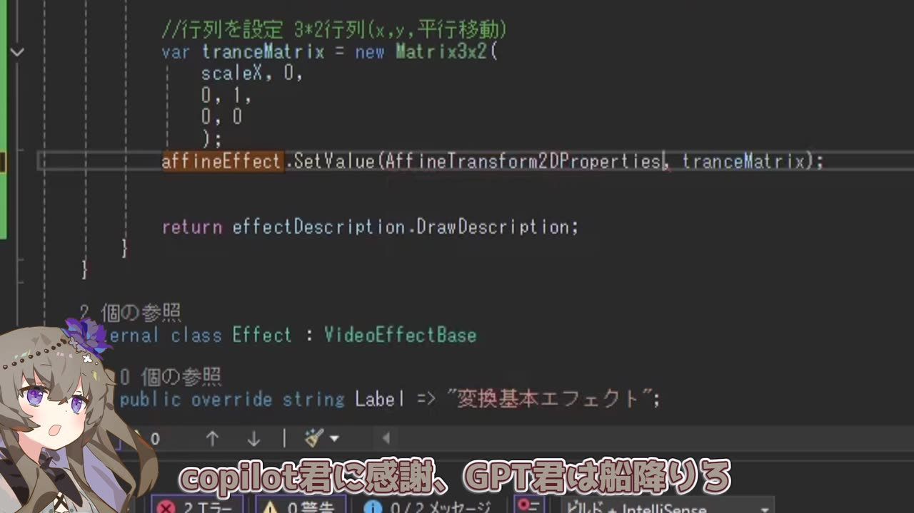
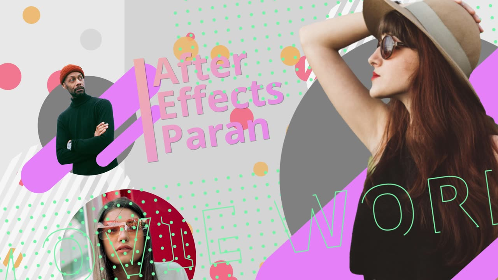
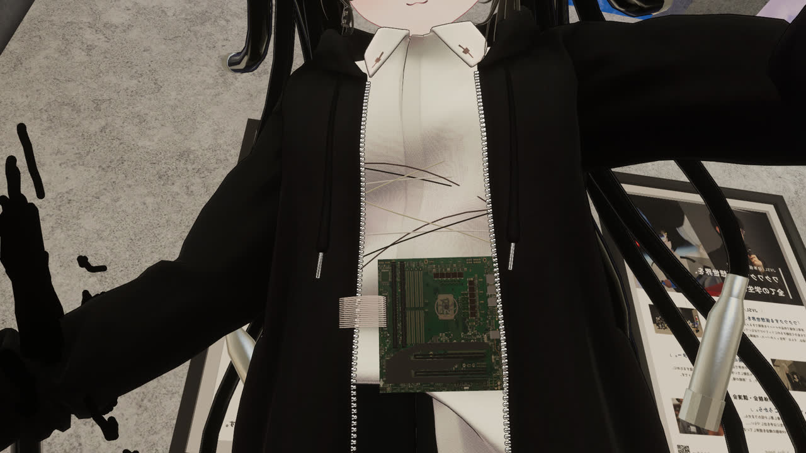
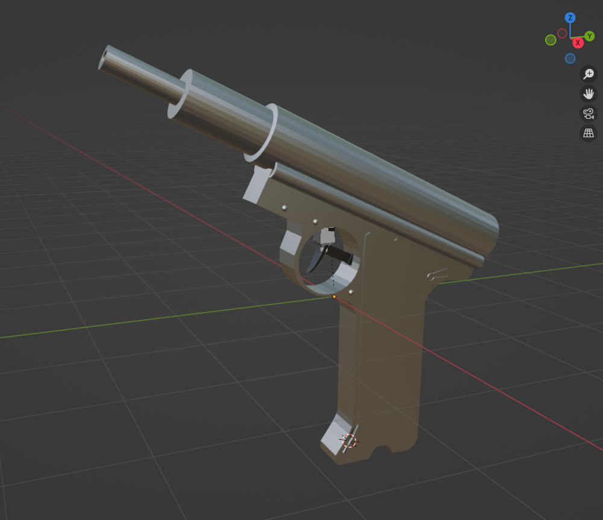

作品
カテゴリーを選んで作品を絞り込めます

YouTube 2:27
プログラム
YMM4 エフェクトプラグイン開発
ゆっくりMovieMaker4 の映像エフェクトを C# で自作。VideoEffectBase を継承し、アフィン変換で拡大縮小と平行移動を制御するエフェクトを実装しました。開発の流れを解説動画にまとめています。

YouTube 0:10
CG
After Effects モーショングラフィックス
After Effects の練習作品。図形と写真を組み合わせたキネティックタイポグラフィのオープニングアニメーションです。

CG
VRChat アバター
VRChat で使用しているアバター。マザーボードをアクセサリーとして配置しています。

CG
3D モデリング — 銃
Blender で制作した銃の 3D モデル。バレルやグリップの形状をポリゴンで組み上げています。
CG
スケーリングの有無による比較
キャラクターアニメーションにおける拡大縮小（スケーリング）の効き方を検証した比較。どちらかを再生すると 2 本が同時に動きます。